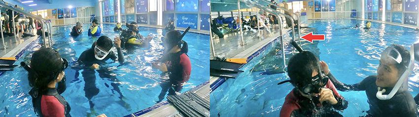

|
近年來自由潛水超夯的啊！！而且拍照起來好美喔 想像自己是一條美人魚~~~讓我也很想學。但礙於我不會游泳…雖然說「不會游泳的人，也可以玩自由潛水？」但我就不相信啊，所以一直沒報名潛水考照課程。就在某一天，在網路上看到有體驗自由潛水一堂課，就跟朋友一起報名來體驗啦！也聽教練說「不會游泳的人，學自由潛水學比較快？」(真的還假的啦！！這可是增加我的信心了，不然我很緊張捏><)
我報名的這家體驗自由潛水的上課地點主要是在台北、台中、小琉球，如有其他地點需求，可以再問教練。我是去台北南港運動中心，跟大家分享我~旱鴨子學自潛心得及報名自由潛水課程，就送IST低容積面鏡+呼吸管 (市價NT$1,700)，但！這活動不確定之後會不會一直都有，所以趕快報名就趕快有啊！
曼呆潛水KOZY DIVE的服務項目：體驗自由潛水、初階自由潛水課程、進階自由潛水課程、自由潛水導覽、海洋團練課程(與教練約)、潛立方團練課程，對於其他課程有興趣的話，可以再到官網看囉！以下是體驗自由潛水Discover Freedive課程費用參考。
- 開課地點：小琉球、台中北區運動中心、台北南港運動中心
- 課程日期：採客製化預約 (教練與學生比例1:2)
- 課程規劃：學科理論+平靜水域體驗
- 費用：NT$2,500 (包含潛水裝備租借、泳池入場門票 ; 不包含船票、機車、住宿、個人餐食與其他消費;若有船票、機車、住宿需求，可代訂)
「想踏入自潛的領域，卻不知道適不適合自己？很多疑問和困惑，想知道下水後是什麼樣子？」對！ 這體驗自由潛水一堂課，好適合我喔！！不用游泳的人真的可以來玩自由潛水，只要你不怕水，放鬆~~不要緊張~~(但哈哈哈，我會緊張) 來分享緊張的我的體驗過程及初次體驗自由潛水心得感想，給也想要嘗試自由潛水體驗的你，多些了解，用一次呼吸的時間，愛上自由的大海！
集合前可先吃點輕食，不建議午餐吃過飽，以免下水身體不適。集合後將有1.5小時自由潛水介紹及基礎學科講解，2小時的泳池練習，共3.5小時。教練與學生比例1:2，聽說一般業界的體驗人數比例是1：4~6？這樣的品質肯定不好的阿，像我又是學比較慢的人，不會游泳會比較怕…實在很需要教練關照！！
- 學科理論1.5小時 : 裝備介紹、耳壓平衡技巧、自潛生理學/物理學、呼吸調整與靜態閉氣練習、自潛的安全守則。
- 平靜水域2小時 : 裝備使用、浮潛技巧、呼吸調整、閉氣生理反應、攀繩下潛、躬身下潛。
台北南港運動中心，位在台北松山火車站、台北捷運松山站/後山埤站附近，因疫情影響，需配戴口罩及實名制入場，我進去的時候是沒有核對身分證件，就填一張小單，請填〔入館時間/姓名/聯絡電話〕就會給一張小貼紙，不要弄丟囉！
 |
一進門的左手邊，曼呆潛水教練會在這等候你的到來，請找橘色的大浮球，學科理論1.5小時，就是坐在這裡聽。你想像中的潛水是什麼？會先讓大家知道一些基本知識及自由潛水裝備介紹(一般潛水在用的與自由潛水在用的設備差異及舒適感比較)。
當你想開始接觸自由潛水時，不如直接就購買自由潛水專門用的面鏡，這樣去一般潛水浮潛也都可以通用，但如果是一般浮潛用的面鏡，就不適合拿來自潛，因為面積容積服貼度會有差異、呼吸管軟硬彈性也有差。
其他的學科理論介紹，在本篇文章中就不多說了~體驗自由潛水，只會講一些很初階的概念，想要深入更了解 🏊就是要上初階自由潛水課程/進階自由潛水課程。
上課時間其實過滿快的耶！！ 我們來去下水吧~~~~ (深呼吸 哈哈哈 我開始緊張了XD)
我是報名體驗假日(星期六)下午場次13:30-17:00，泳池練習時間是15:00才可進場，教練說~難得泳池學自潛的人，不算多呢！比較多是學水肺潛水。說是這樣滿幸運的，通常平日白天上課的話，泳池人少，品質會更好唷！ (注意可別撞上背氣瓶的人了⚠)
請要先簽名來報到，然後把門口拿到的小貼紙，也貼在你簽名的旁邊。
女生廁所的部分：有三間廁所及三間淋浴間，內無盥洗備品，如要洗澡記得自己攜帶。吹風機只有一台，插座是220V，非一般家裡110V電壓，所以自己帶來的吹風機沒得地方插…泳池的吹風機，風速也是算有熱不算小，我覺得不會吹很慢，剛好我用的時候沒有其他人排隊👌 (男生廁所我沒拍欸)
泳衣穿好後，教練會問你~要穿防寒衣嗎？其實很想要拍照美美，但我會怕冷，所以還是有穿上防寒衣 ; 另一方面，也是因為我不會游泳，防寒衣能增加浮力，對於不會游泳的初學者來說還是穿一下比較好！ 來一張我們與教練的合照，體驗還請多多照顧了！
跟潛伴一起互相看一下裝備有沒有戴好，頭髮撥乾淨~
咬起呼吸管的我，覺得嘴巴好像猩猩的好醜喔
在泳池平靜水域課程時間約2小時，有兩區泳池的深度練習，分別是1.4米及5米。在水中練習，也會邊幫你側錄，結束後會檢討潛水姿勢，影片會上傳雲端~自行下載。幸好我有穿防寒衣，因為在水下沒有動的時候，會冷，我在發抖欸，等天氣再熱一點的時候，就不會冷了！
當面鏡進水的時候怎麼辦？當呼吸管進水的時候怎麼辦？會透過演練讓你先知道發生問題的時候，怎麼排除水~~(呼氣，水就噴出來了呀！)
|  |
來閉氣試看看可以閉多久？朋友閉氣了2分鐘，我只閉了1分鐘15秒，教練說有超過1分鐘，都算是挺好的，如果想考照PADI的話，是要閉氣1分鐘30秒 ; AIDA 則是要2分鐘才給過。
會教你關於閉氣的技巧及閉氣後的水上呼吸調節，自己在家當然也可以多練習唷！ (只是如果你在有水的地方練習，請都要旁邊有人陪伴比較好，即使你是在洗手台/臉盆練習也是！！ 或是就自己躺在床上練，最安全了！！)
來穿上蛙鞋踢踢看及如何在水中漂游
學動作的過程，教練都會先示範個一兩次，然後就換你來演練
1.4米的淺水池演練後，要帶你轉移到5米深水池學習 (踩不到地板的地方，我…又更緊張了)
但！其實也沒有那麼恐怖嘛！真的會浮起來不會沉呢！只要你的呼吸管有浮在水面上，都一樣很可以正常呼吸 (記得踢水的時候，是大腿微幅踢)
先在深水池練習游過去游過來兩三趟後，要來練習耳壓的平衡(爬樓梯及拉繩下潛)，每下一兩階，記得要捏鼻吐氣，讓耳朵兩側開通，再繼續往下行進，如果你耳朵沒開的話，愈往下會愈難開。
爬樓梯有分正向下去及倒立下去，其實我在「倒立」下去卡關了………我………下不去啊！也是因為我太緊張了，就很怕氣不夠。但其實一趟下去上來也都才花個10幾秒而已，我剛剛閉氣都超過一分鐘了，一定夠的。但就是耳壓平衡調適，每呼氣一次就覺得因為用力，就浪費了幾秒的氣?就覺得好像快不夠了，還是需要多練習找感覺…..
在樓梯那邊試了多次都沒有成功後，就請教練直接來讓我拉繩看看好了？ (我的隊友，就下去練得很順啊哈哈哈，就我卡關在這裡) 但其實拉繩算是比走樓梯難，因為拉繩會漂移比較不穩。
我也是在這裡試了多次，終於有一次我有摸到球了！！！！其實還要再往下游些才算成功，但我覺得我好像快沒氣了，就碰到後~~往上游，不然其實可以再撐一下的。
練完耳壓平衡後，來練練躬身下潛，我就是前面的下潛耳壓平衡卡太久了，所以後面的躬身練習只有練個兩三次而已。但因為前面沒有順順的通過，後面要下一步就會更不容易。也因為躬身下潛需要腹部出點力、屁股翹，姿勢才會美，身體也才往得下潛，請要想像自己是條魚游來游去的美人魚？哈哈哈心情放鬆擺動就可以了！自己想是這麼簡單，但就覺得難欸，這時候教練會輔助幫你身體往下壓，讓你感覺到向下的力量有成功下潛的感覺！
很快的兩個小時泳池練習就過了！！有點不是很過癮，畢竟我是個很想要學會的人，就覺得我應該是可以的，只是因為過於緊張。對於會游泳的人來說，我覺得學自由潛水都不會是難事！只要多練習~~~但我看我會游泳的朋友呀，她在躬身下潛這一塊，就做得沒有我標準耶 嘿嘿，所以不會游泳的人，也許會學得比較快?
上岸後把防寒衣脫掉，要來去換洗了。那時忘記也來試試沒穿防寒衣(不會游泳)的自己，是不是也可以成功漂浮游得起來？當你換洗完後，要再回到原本上學科理論課的地方唷，教練會花個半小時來講解、邊看剛剛在泳池幫你錄下來的影片的動作是否標準及建議如何修正，才會游更順！因為自己在游的當下，實在是很難知道自己哪裡做不標準，應該很少業者體驗完後，還會幫你課後檢討的吧?！！！所以我覺得曼呆潛水滿不錯！從小地方都可以看得出用心。
| 🔽像是躬身下潛，是要90度才是標準，下圖就小於90度❌ | ||
第一次體驗自由潛水，覺得好玩耶！而且阿愷教練好親切、很有耐心、動作教學也很仔細，原來沒有自己想像中的那麼困難及恐怖嘛，因為我是不會游泳不會換氣的人，所以肯定是比會游泳的人，多很多的忐忑心情。的確不會游泳的人也可以來學潛水唷！你也可以透過學潛水後，之後就會學會游泳了? (哈哈希望我也是有這麼一天啦，因為會游泳的人，能增加對水域的安心感)
也因為是一次的自由潛水體驗課程，可以讓你先感覺自由潛水的樂趣，看是不是要更進一步來上課考照？是聽說很難有人一次就pass的，都要上完完整課程後、多練習再練習再練習，才會pass。如果自潛證照沒考過的話，其實也都有學會了自潛技巧，一樣也是都可以出海玩唷！！反正就是安全都要自己多注意~~~~~~希望哪天我也可以近距離與海龜見面！